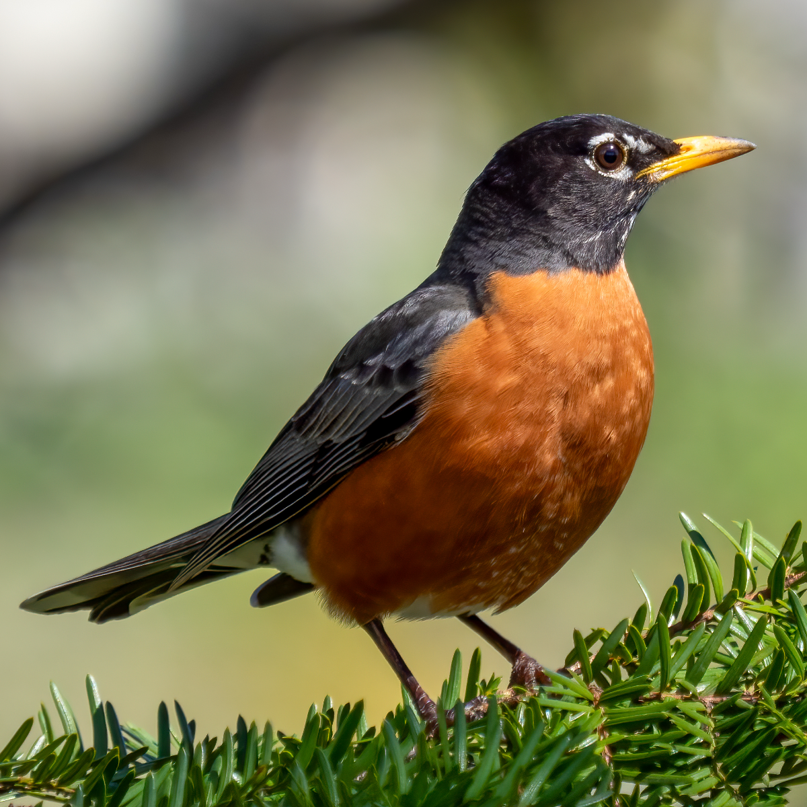
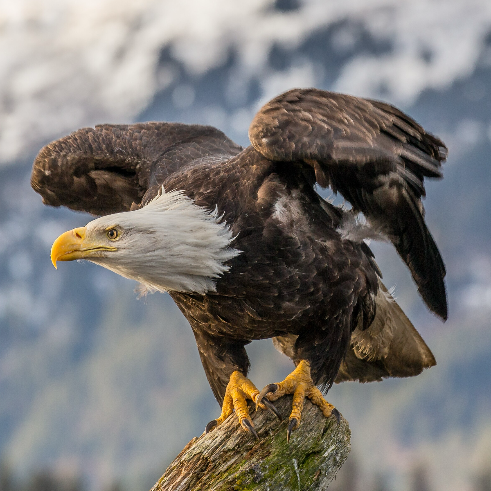
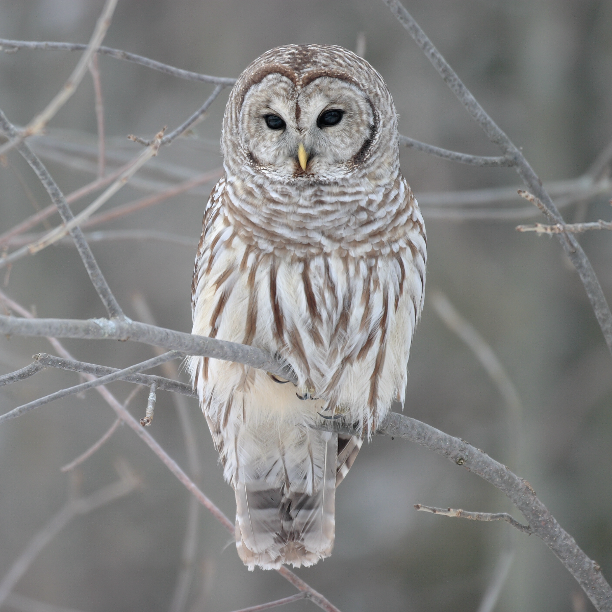
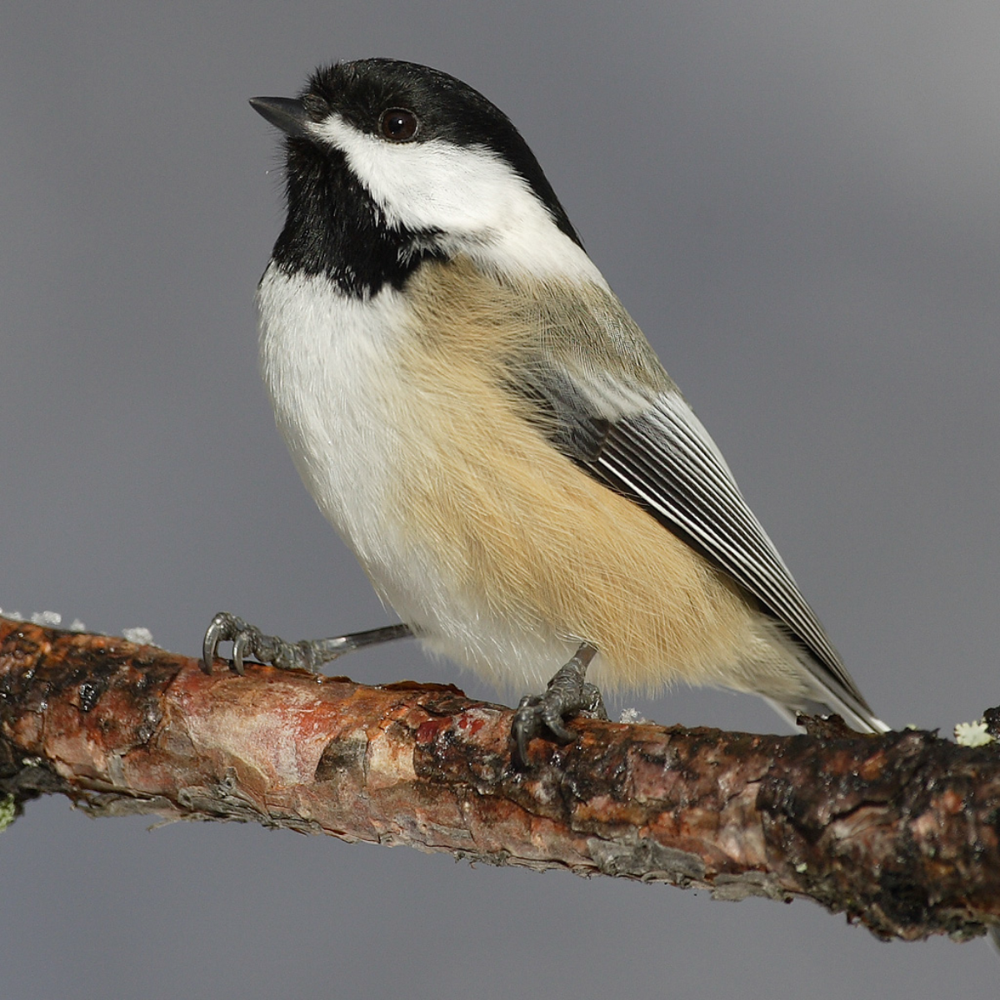

Lilypad is a 9-acre patch in the Catskills, bordered by a creek on the north, a mountain ridge on the south, and neighbors on the east and west.
This page is a project to improve the experience of birds that inhabit Lilypad.
Songbirds require a great amount of shelter, because there are many predators around. They tend to congregate in the thornbushes, but many of those are invasive multiflora.
Because of bears, I have to be very careful of birdfeeders.
 |
American Crow | Corvus brachyrhynchos | |
 |
 |
American Robin | Turdus migratorius |
 |
 |
Bald Eagle | Haliaeetus leucocephalus |
 |
 |
Barred Owl | Strix varia |
 |
 |
Black-capped Chickadee | Poecile atricapilla |
This page is also a course record for the Binoculars to Binomials - 2026 Contemplative Cohort.